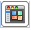

Accessing a Template
Home
APA Template
MLA Template
Access Template
Save Template
References
Accessing a Custom Template
On the toolbar at the top, above the document menu,
click  "New from template"
In the navigation menu on the left choose "My Templates"
Locate and click on the appropriate template